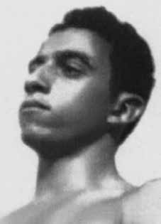

Merival
Araújo
CIRCUNSTÂNCIAS DA MORTE
Merival Araújo morreu em 14 de abril de 1973, no Rio de Janeiro. Em 7 de abril de 1973, foi preso na rua das Laranjeiras, no Rio de Janeiro, sob uma suposta emboscada envolvendo agentes do DOI-CODI e seu então amigo, o professor Francisco Jacques Moreira de Alvarenga, militante da RAN (Resistência Armada Nacional). A situação fora forjada quando, dois dias antes, Jacques encontrava-se preso e, coagido a colaborar, participou da montagem junto com os policiais.
Merival, então um dos comandantes da ALN, havia combinado com Jacques a busca de algumas armas para a militância que estavam em sua posse. De acordo com relato de Jacques ao seu colega Rubim Santos Leão de Aquino, inserido no processo da CEMDP, ao perceber movimentações estranhas no momento das negociações, Merival tentou fugir. Detido, fora então levado ao DOI-CODI, onde lá permaneceu preso e foi torturado até a morte. No entanto, versões oficiais dos órgãos de segurança atestam que Merival teria sido morto ao resistir à prisão.
Segundo depoimento do general Adyr Fiuza de Castro, houve resistência por parte de Merival que chegou a ferir um dos agentes. Outro policial que, à paisana, acompanhava as movimentações quebrara seu pescoço, matando-o na hora. O relato tinha o intuito de legitimar a versão de morte envolvendo “combate de rua”.
Jornais publicados à época atestam em parte essa versão, afirmando que Merival teria morrido em confronto com as forças de segurança. Já o Dossiê dos Mortos e Desaparecidos Políticos a partir de 1964, afirma que a prisão também foi testemunhada por moradores da região, contrariando a versão oficial de que Merival teria sido morto ao resistir à prisão.
Uma semana depois de ter sido preso no dia 14 de abril de 1973, seu corpo deu entrada no Instituto Médico Legal (IML) como “desconhecido”, sob a justificativa de que teria sido morto em tiroteio na Praça Tabatinga. Auto de Exame Cadavérico realizado pelos legistas Roberto Blanco dos Santos e Hélder Machado Paupério descrevem escoriações pelo corpo.
Já seu atestado de óbito atesta como a causa da morte, “ferimento penetrante do tórax com transfixão dos pulmões, hemorragia interna e anemia aguda consecutiva”. No entanto, as fotos da perícia anexadas ao laudo mostram fortes indícios de marcas de tortura, chegando a faltar alguns pedaços da pele nos braços e pernas de Merival. Ações violentas não são descritas no documento da necropsia.
Merival foi sepultado como indigente no dia 24 de maio de 1973, dez dias após a suposta data de sua morte, no Cemitério de Ricardo de Albuquerque. Quase cinco anos depois, seus restos mortais foram destinados a um ossário geral e, entre 1980 e 1981, transferidos para uma vala clandestina.
Merival Araújo died on April 14, 1973, in Rio de Janeiro. On April 7, 1973, he was arrested on Rua das Laranjeiras, in Rio de Janeiro, under an alleged ambush involving DOI-CODI agents and his then friend, professor Francisco Jacques Moreira de Alvarenga, a member of the RAN (National Armed Resistance). The situation was faked when, two days earlier, Jacques was arrested and, coerced into collaborating, participated in the assembly together with the police.
Merival, then one of the ALN commanders, had arranged with Jacques to search for some weapons for the militancy that were in his possession. According to a report by Jacques to his colleague Rubim Santos Leão de Aquino, part of the CEMDP process, upon noticing strange movements during the negotiations, Merival tried to escape. Arrested, he was then taken to DOI-CODI, where he remained imprisoned there and was tortured to death. However, official versions of security agencies attest that Merival was killed when resisting arrest.
According to testimony from General Adyr Fiuza de Castro, there was resistance from Merival, who even injured one of the agents. Another police officer who, undercover, was monitoring the movements, broke his neck, killing him instantly. The report was intended to legitimize the version of death involving “street combat”.
Newspapers published at the time partially attest to this version, stating that Merival had died in a confrontation with the security forces. The Dossier of Political Dead and Disappeared from 1964 states that the arrest was also witnessed by residents of the region, contradicting the official version that Merival had been killed when resisting arrest.
A week after he was arrested on April 14, 1973, his body was admitted to the Legal Medical Institute (IML) as “unknown”, on the grounds that he had been killed in a shootout in Praça Tabatinga. Cadaveric Examination Report carried out by coroners Roberto Blanco dos Santos and Hélder Machado Paupério describe abrasions on the body.
His death certificate states that the cause of death was “penetrating chest injury with transfixion of the lungs, internal bleeding and consecutive acute anemia”. However, the forensic photos attached to the report show strong signs of torture marks, with some pieces of skin missing from Merival's arms and legs. Violent actions are not described in the autopsy document.
Merival was buried as a pauper on May 24, 1973, ten days after the supposed date of his death, in the Ricardo de Albuquerque Cemetery. Almost five years later, his remains were sent to a general ossuary and, between 1980 and 1981, transferred to a clandestine grave.
Merival Araújo murió el 14 de abril de 1973 en Río de Janeiro. El 7 de abril de 1973 fue detenido en la Rua das Laranjeiras, en Río de Janeiro, en una supuesta emboscada en la que participaron agentes del DOI-CODI y su entonces amigo, el profesor Francisco Jacques Moreira de Alvarenga, miembro de la RAN (Resistencia Armada Nacional). La situación fue fingida cuando, dos días antes, Jacques fue detenido y, obligado a colaborar, participó en la asamblea junto con la policía.
Merival, entonces uno de los comandantes del ALN, había acordado con Jacques buscar algunas armas para la militancia que estaban en su poder. Según relato de Jacques a su colega Rubim Santos Leão de Aquino, parte del proceso del CEMDP, al notar movimientos extraños durante las negociaciones, Merival intentó escapar. Detenido, luego fue trasladado al DOI-CODI, donde permaneció recluido y torturado hasta la muerte. Sin embargo, versiones oficiales de los organismos de seguridad dan fe de que Merival fue asesinado al resistirse al arresto.
Según testimonio del general Adyr Fiuza de Castro, hubo resistencia de Merival, quien incluso hirió a uno de los agentes. Otro policía que, encubierto, vigilaba los movimientos, le rompió el cuello, matándolo instantáneamente. El informe pretendía legitimar la versión de la muerte que implicaba un “combate callejero”.
Los periódicos de la época dan fe parcialmente de esta versión, afirmando que Merival había muerto en un enfrentamiento con las fuerzas de seguridad. El Dossier de Muertos y Desaparecidos Políticos de 1964 afirma que la detención también fue presenciada por vecinos de la región, contradiciendo la versión oficial de que Merival había sido asesinado al resistirse al arresto.
Una semana después de su detención, el 14 de abril de 1973, su cuerpo fue ingresado en el Instituto Médico Legal (IML) como “desconocido”, por considerar que había sido asesinado en un tiroteo en la Plaza Tabatinga. El informe de examen cadavérico realizado por los forenses Roberto Blanco dos Santos y Hélder Machado Paupério describe abrasiones en el cuerpo.
Su certificado de defunción indica que la causa de la muerte fue “herida penetrante en el tórax con transfixión de los pulmones, hemorragia interna y anemia aguda consecutiva”. Sin embargo, las fotografías forenses adjuntas al informe muestran fuertes signos de marcas de tortura, faltando algunos trozos de piel de los brazos y piernas de Merival. Las acciones violentas no se describen en el documento de la autopsia.
Merival fue enterrado como indigente el 24 de mayo de 1973, diez días después de la supuesta fecha de su muerte, en el Cementerio Ricardo de Albuquerque. Casi cinco años después, sus restos fueron enviados a un osario general y, entre 1980 y 1981, trasladados a una fosa clandestina.